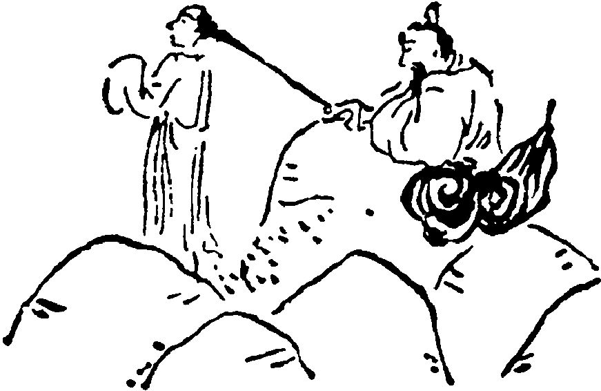

绍原先生：
《百卌孝图》[226]尚在，其所绘“拖鞍”[227]之法如下：——

迅 上 十二月九日
注 释
[226] 《百卌孝图》 据《朝花夕拾·后记》，当为《二百卌孝图》，清代胡文炳绘制。
[227] “拖鞍” 据《明史·列女传》记载：武邑高氏女，其父客死他乡，仅知葬于河南虞城城北，塚内以枣木小车辋为识。后来她去该地寻找其父遗骸，“抵葬所，塚累累不能辨。氏以发系马鞍逆行，自朝及夕，至一小塚，鞍重不能前，即开其塚，所识车辋宛然。”鲁迅所画即此故事，坐于鞍上者为女父之鬼魂。